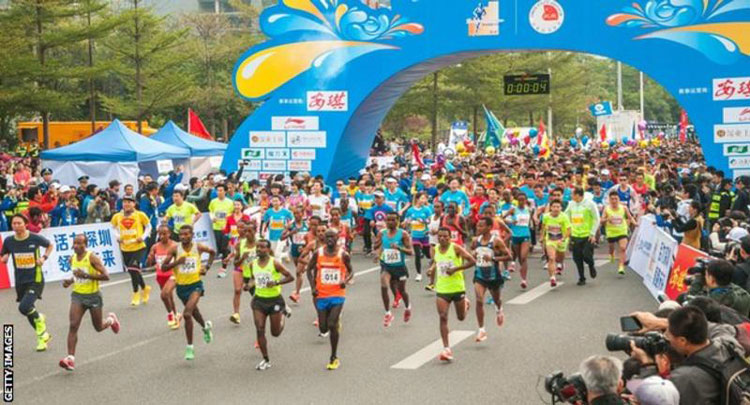

Shenzhen Half Marathon: Traffic cameras catch cheats taking shortcut
29 Nov 2018 | Athletics
Almost 250 runners in a half marathon were caught cheating when traffic cameras captured them taking shortcuts through bushes.
Organisers of the race in Shenzhen, China, also discovered 18 runners wearing fake bibs and three runners they described as "imposters".
All who cheated are now facing bans.
"Marathon running is not simply exercise, it is a metaphor for life, and every runner is responsible for him or herself," organisers said. v
Footage captured by Shenzhen police traffic cameras showed runners cutting through bushes to an adjacent carriageway, instead of continuing along the road and making a U-turn.
Organisers said the 237 people caught cheating would have run two or three kilometres less than the full 21-kilometre (13.1-mile) distance.
The annual race in China's fourth largest city typically attracts about 16,000 runners.
News of the cheating led to the People's Daily newspaper - one of China's biggest publications - to urge runners to "respect the marathon and respect sporting spirit" in an editorial.
Last year, organisers of the Beijing Half Marathon introduced a facial recognition system to stop runners using ringers to run on their behalf.
China has held 1,072 marathons and other road races this year, up from 22 in 2011, according to figures from the Chinese Athletics Association.